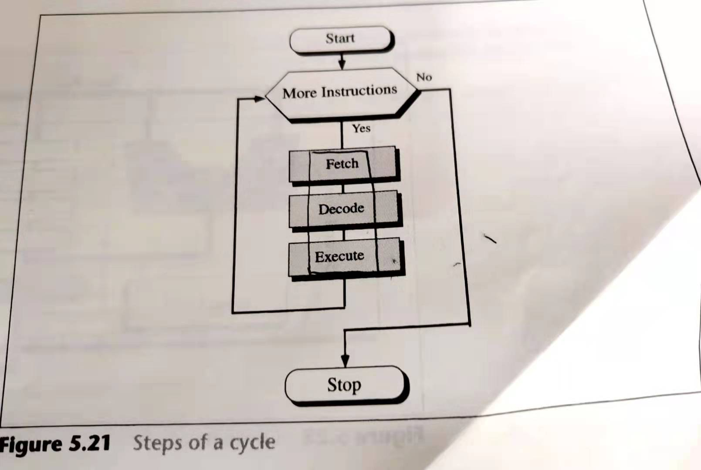
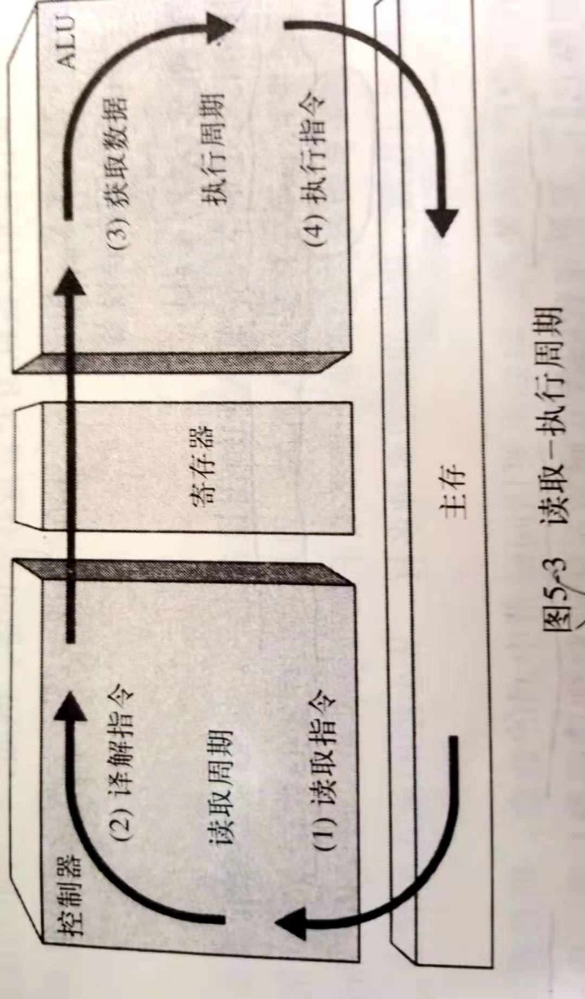

读取--执行周期
 现在以一个具体实例来讲解一下Fetch-Decode-Excute Cycle如何执行：
我们以求14-10=4为例：
下图表示了在执行这个项目前内存和CPU的情况。R1,R1和R3都是普通寄存器。R1和R2存储输入数据；R3存储输出数据。I寄存器是指令寄存器，PC是程序计数器。

第一步：在Load 200 R1的这一步中，机器会执行Fetch-Decode-Excute这三步去加载位于内存编号200的内容，并将其存入R1中。
第二步，在读取Load 201 R2的这一步中，机器会执行Fetch-Decode-Excute这三步去加载位于内存编号201的内容，并将其存入R2中。
第三步，在Add R1 R2 R3的这一步中，机器会执行Fetch-Decode-Excute这三步把R1和R2中的数据加起来，并将结果存储在R3中。
第四步，在Store 202 R3的这一步中，机器会执行Fetch-Decode-Excute这三步来讲计算结果存储在202中。